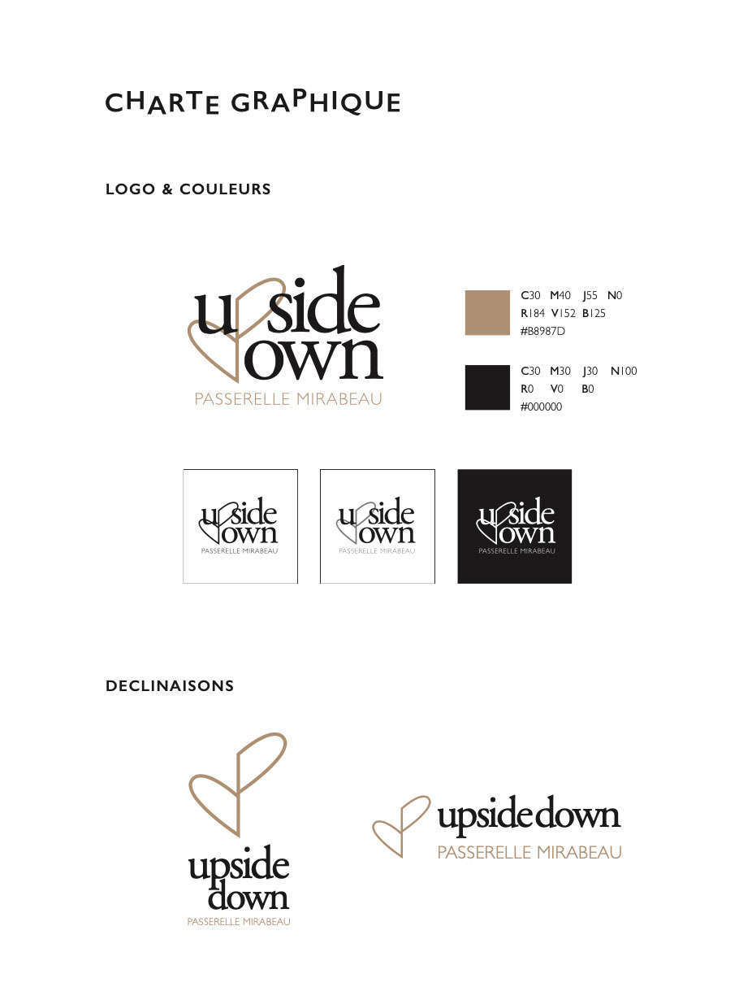
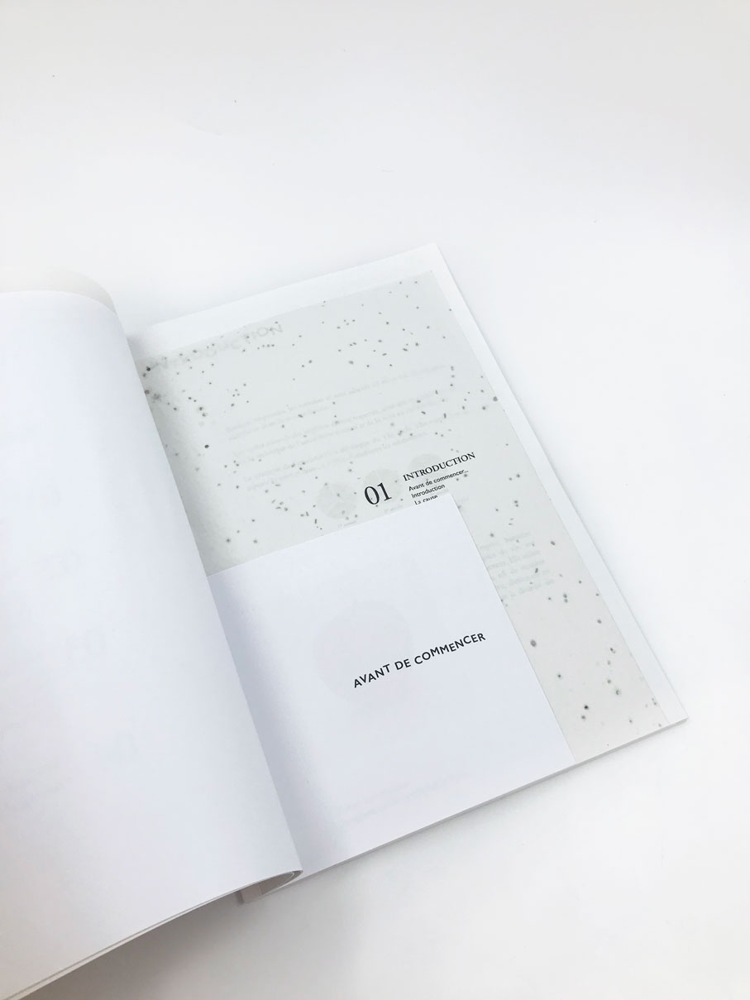
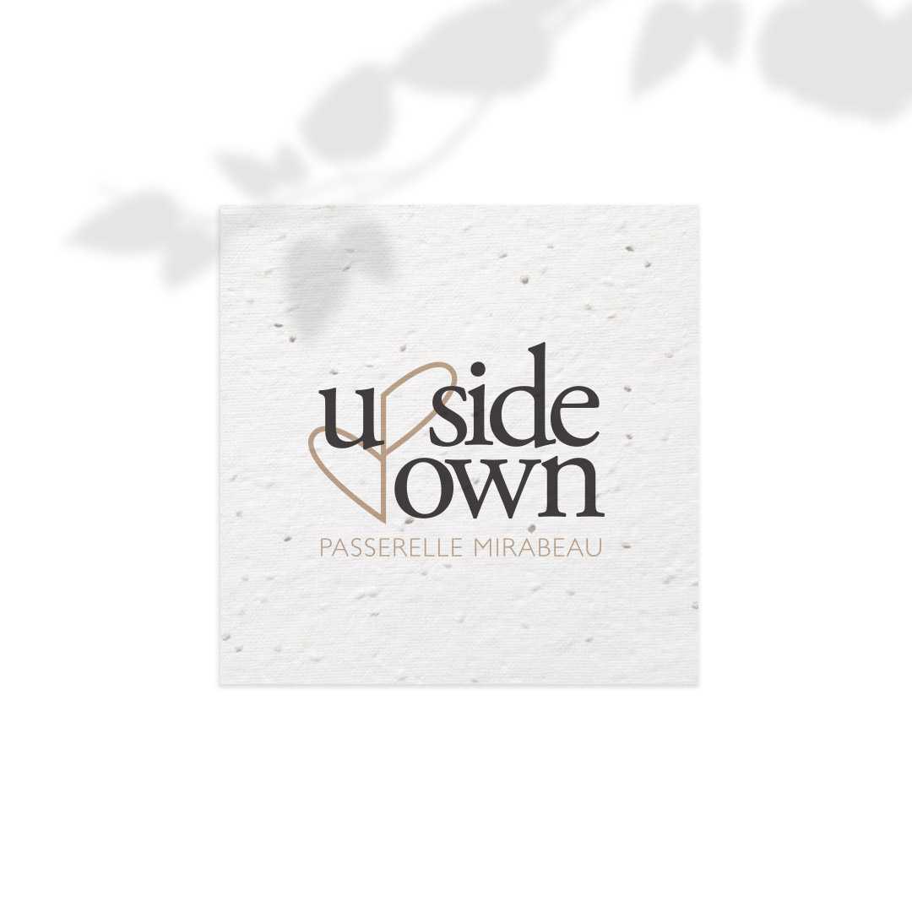
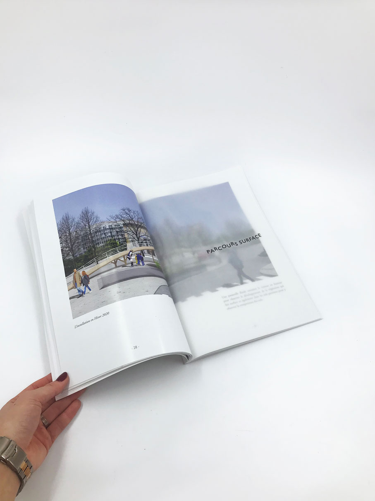
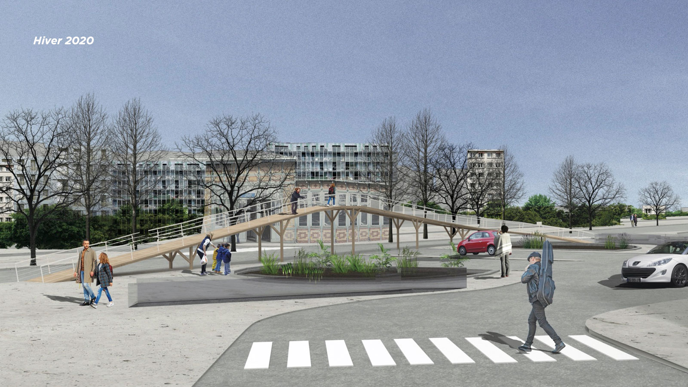
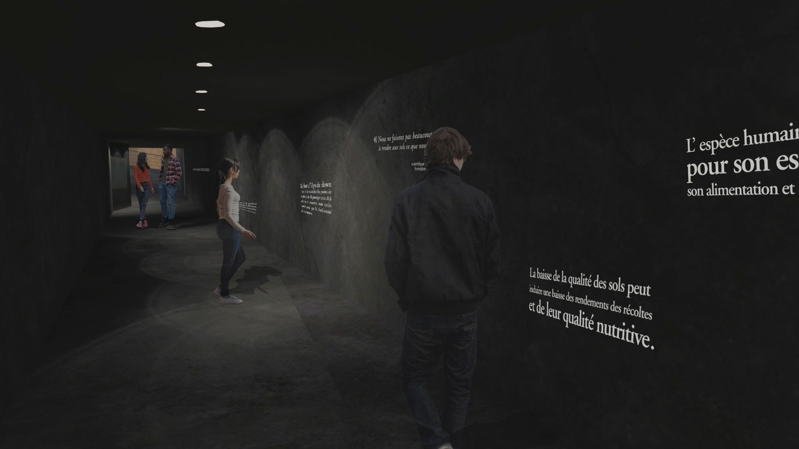

EN
Since the industrial era, human species has been intoxicating its’ soils for massive production. The natural functions of the soil, its autonomus capacity to balance the minerals and biodiversity are deeply affected. Producing on this quality of grounds directly has an impact on human’s health and micro-climates.
Upside down is a two-way urban bridge. Going up, the visitors can observe the developpement of vegetation on different soils, and going down, they arrive in an immersive underground path where soils can be observe from closer.
Upside down 2019
FR
Depuis l’industrialisation l’espèce humaine modifie le sol diminuant en quelques années la quantité et la diversité des formes de vie qu’il abrite. L’artificialisation des sols agricoles affectent leurs fonctionnalités naturelles. Une agriculture naturelle et de qualité a une capacité autonome à abriter une biodiversité, des cycles naturels. Une agriculture avec des modifications apportée par l’homme affectent les micro-climat, les cycles naturels et sa qualité nutritive.
Upside down : Une passerelle fluide emmène le visiteur en hauteur pour observer le développement de la végétation et la partie souterraine est une expérience immersive accompagnée d’un fond sonore issu de divers bruits provenant de l’activité humaine.
Depuis l’industrialisation l’espèce humaine modifie le sol diminuant en quelques années la quantité et la diversité des formes de vie qu’il abrite. L’artificialisation des sols agricoles affectent leurs fonctionnalités naturelles. Une agriculture naturelle et de qualité a une capacité autonome à abriter une biodiversité, des cycles naturels. Une agriculture avec des modifications apportée par l’homme affectent les micro-climat, les cycles naturels et sa qualité nutritive.
Upside down : Une passerelle fluide emmène le visiteur en hauteur pour observer le développement de la végétation et la partie souterraine est une expérience immersive accompagnée d’un fond sonore issu de divers bruits provenant de l’activité humaine.





